What is Limit (in the Context of Calculus)?
What is Limit (in the Context of Calculus)?
1 We’ve talked about how most pieces from both sides of calculus are already discovered in the 17th century. All it took was just a natural reason for a new math tool. How Newton had that natural reason to understand the instant speed of a falling apple. And later how Leibniz needs to calculate the area under a curve. Whichever side they get started, instant speed or area, once the idea of “using infinitesimals and then eliminating them” was discovered, the other side is basically plain to see.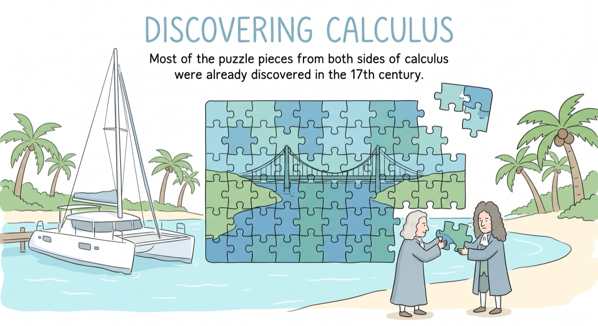
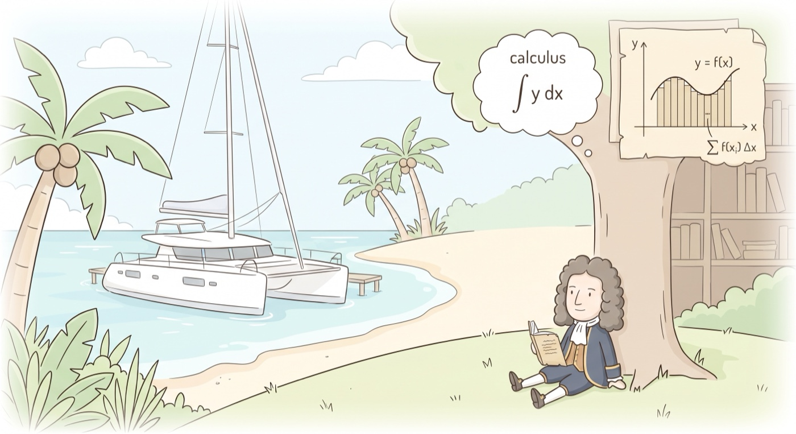
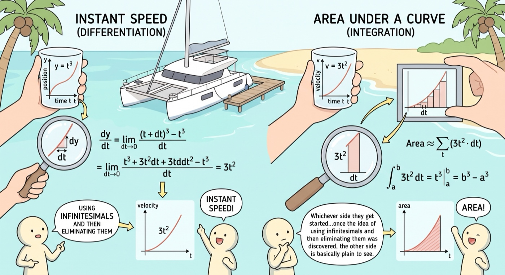
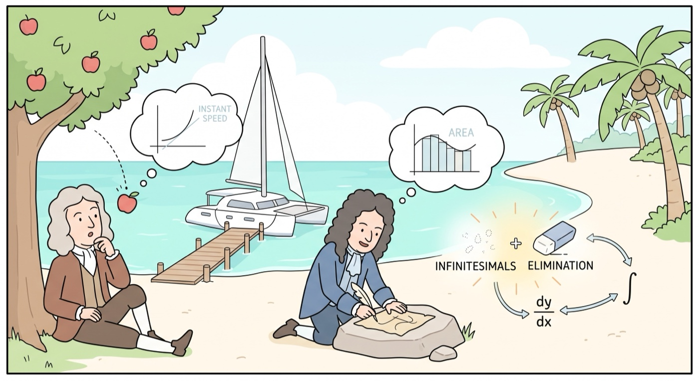
2 The reason it was plain to see is: Ever since 2,000 years ago, people have been using the idea of exhausting small triangles and rectangles to approximate the area of a circle and other shapes with curves. And exhaustion is fundamentally the same idea of infinitesimal or limit. This fascination with shapes and areas certainly was back in fashion during the centuries near when calculus was discovered. Therefore all kinds of methods and thinking about infinitesimals are all over the place, regarding or around areas under crooked shapes and tangent lines.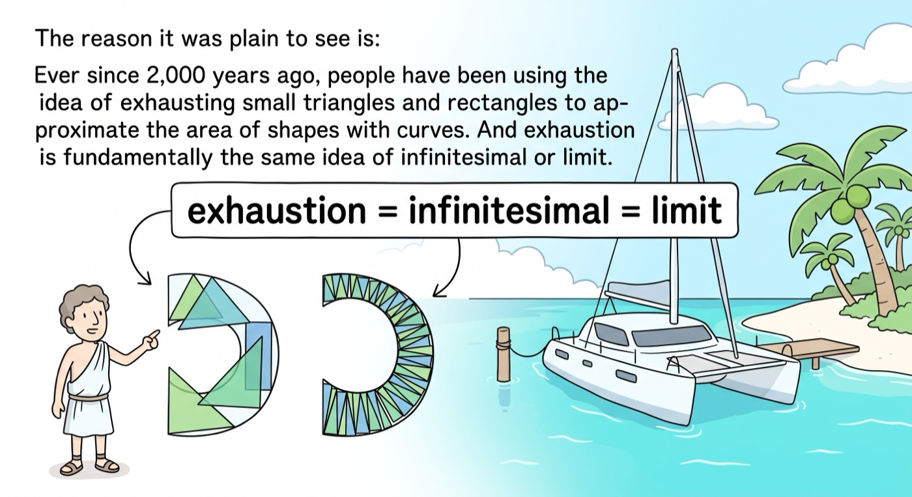
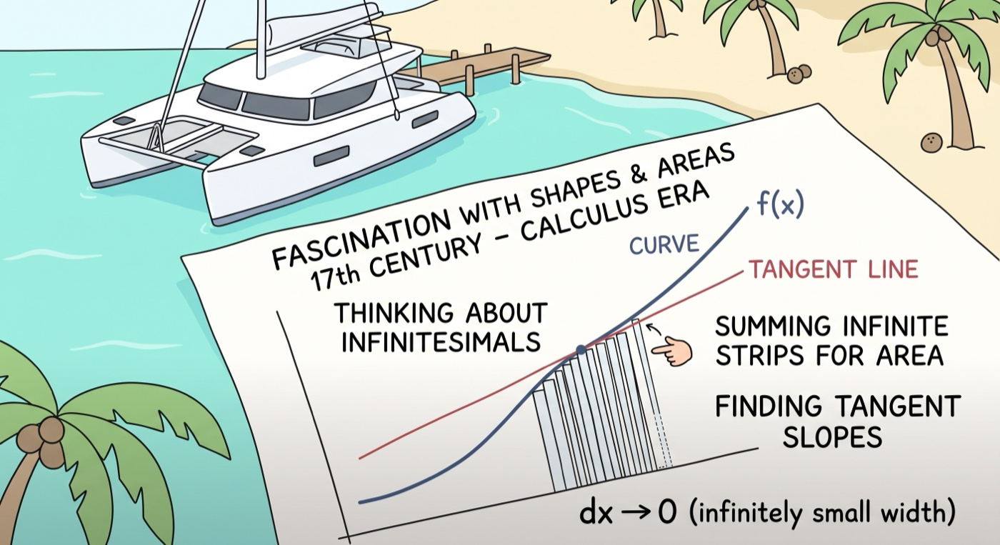
3 Although infinitesimal and exhaustion are the same, infinitesimal was applied in an age where we have formalized analytical algebra and discovered its relation to geometry. It’s like comparing walking to driving a car.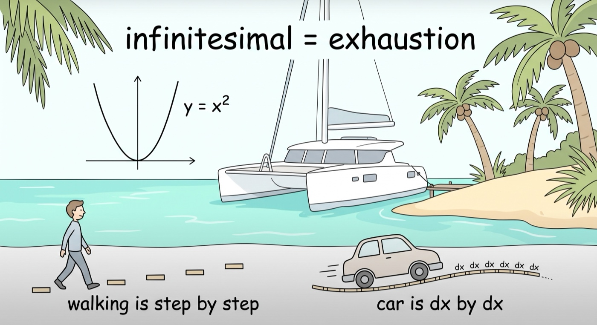
4 For Newton, the genius moment was when he asked the question of “what is instant speed”, the math was actually no trouble at all. Now imagine he now understood, when average speed is measured in small enough interval it’s actually instant speed, what could stop him from seeing if accumulation of average speed is distance, then the area under the curve must also be the distance. And just like that, he saw both sides of calculus. Same can be said about Leibniz, he was into shapes and areas like most gentlemen scientists, not a motion type of guy, but motion curve is just a special case or a specific perspective of looking at curves. If anything, Leibniz had a more general view of calculus, and that’s why his language is more general. Getting area under curve required him shrinking rectangles, and when the rectangle is shrinked to the limit, what could stop him from seeing the tangent or the instant rate of change.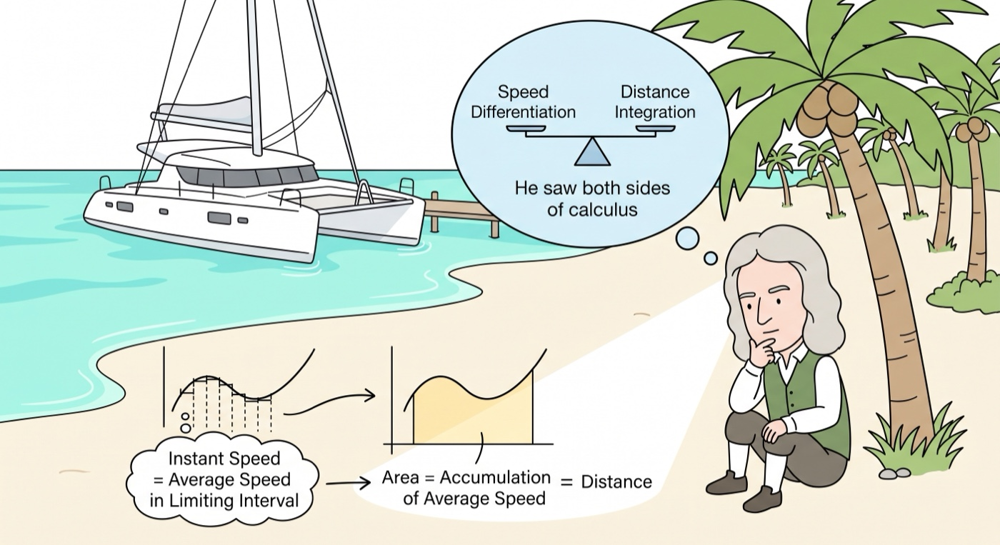
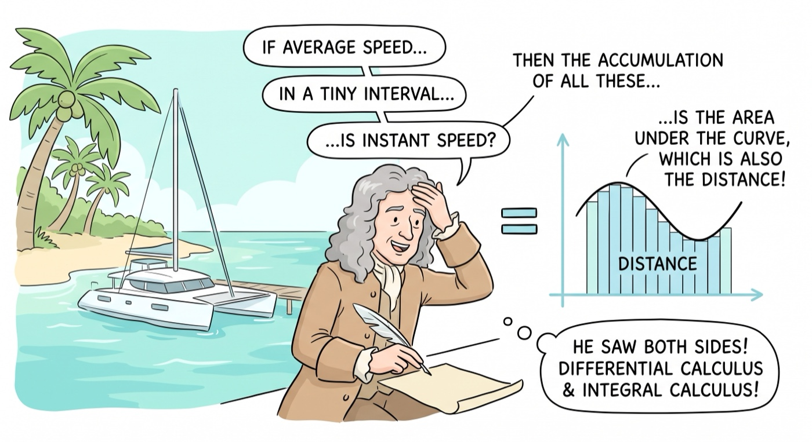
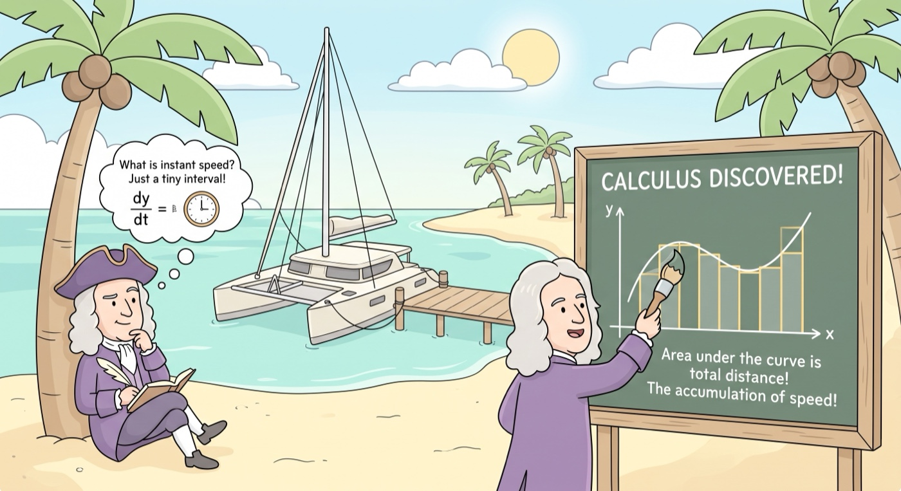
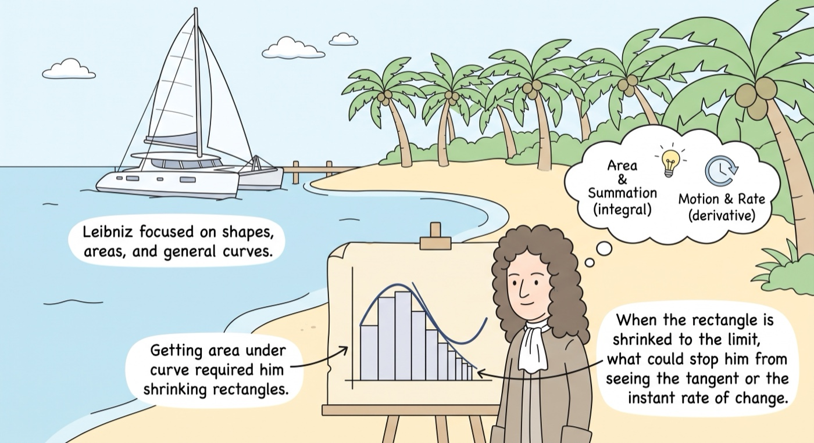
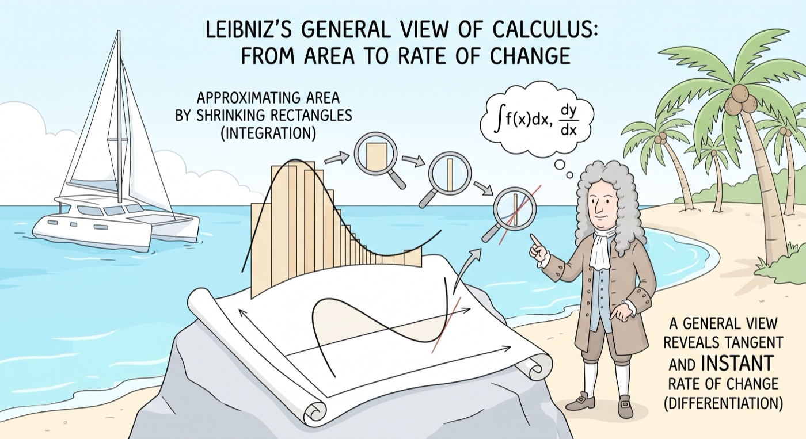
5 By the way, derivative is when we take the limit of average speed. Integral is when we take the limit of accumulated products of speed and time.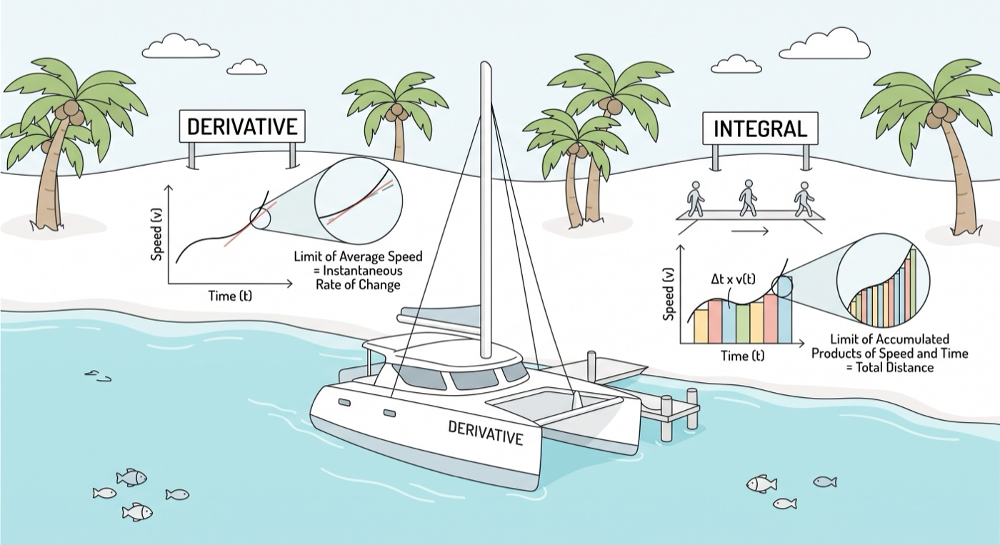
6 Algebraically, what they did was sub-in a very small value, and then eliminate it in the transformation of algebra equations. In derivative, this is a straightforward process. In integral, there is an extra summation sign to eliminate. This small value is the infinitesimal we were talking about. We can call it dx.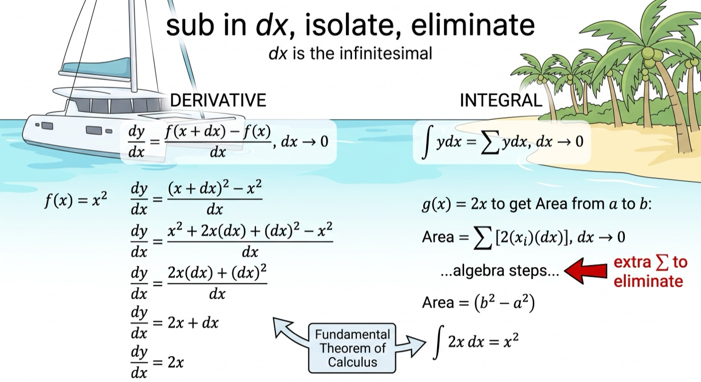
7 But there was no need for limit. True, 2000 years ago, people could calculate area by exhaustion. In 17th century, Newton could calculate speed with dx. Where limit came in, is when 100 years later, mathematicians had a need to formalize this idea of “sub-in an infinitesimal and treat it as zero”. In other words, exhaustion is the original and correct idea but without proper tools, infinitesimal was the proper tool but not rigorously formalized, and limit is simply a modern formalisation of infinitesimal.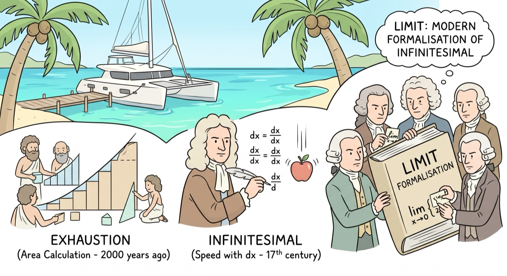
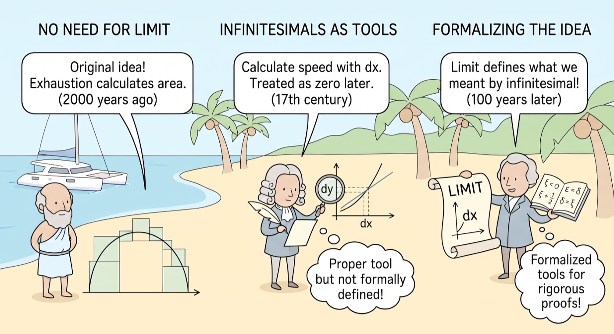